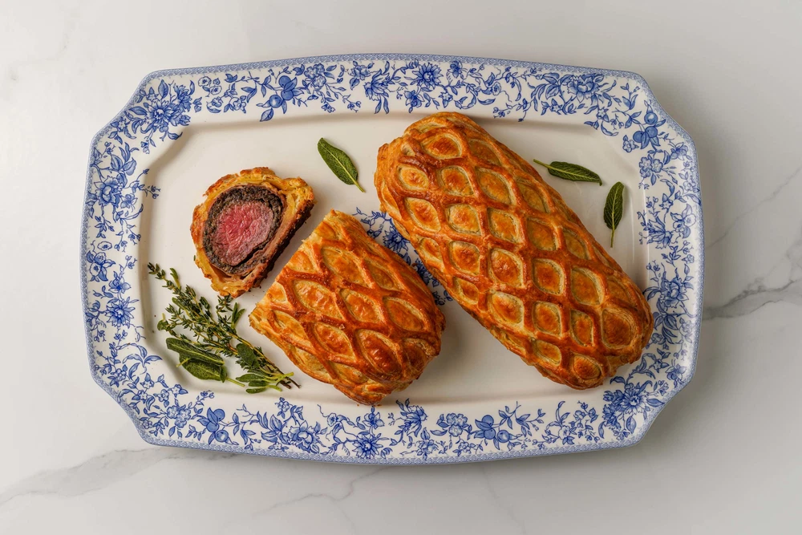

BARU?Beef Wellington
Hidangan daging sapi tenderloin yang dibalut jamur dan puff pastry, terkenal dengan bagian luarnya yang renyah dan bagian dalamnya yang lembut.
Bahan-bahan: Siapkan daging sapi tenderloin, puff pastry, jamur champignon, bawang putih, bawang bombai, mustard, telur, garam, merica, dan minyak zaitun.
Langkah 1: Bumbui daging sapi dengan garam dan merica. Panaskan minyak di wajan, lalu panggang sebentar setiap sisi daging hingga kecokelatan. Olesi permukaannya dengan mustard.
Langkah 2: Cincang jamur, bawang putih, dan bawang bombai. Tumis hingga matang dan air dari jamur menguap. Setelah itu, dinginkan campuran jamur tersebut.
Langkah 3: Letakkan campuran jamur di atas lapisan pembungkus, kemudian bungkus daging sapi dengan rapat. Dinginkan sebentar agar bentuknya tetap kokoh.
Langkah 4: Bungkus daging dengan puff pastry, rekatkan bagian sambungannya, lalu olesi permukaan pastry dengan telur kocok.
Langkah 5: Panggang dalam oven yang sudah dipanaskan hingga puff pastry berwarna keemasan dan daging mencapai tingkat kematangan yang aman.
Langkah 6: Diamkan beberapa menit sebelum dipotong dan disajikan. Beef Wellington siap dinikmati!
BUM CAK jwhfejsdajfhashfjs adhfhsafsafhdjs fhjashfjsadfasfhjsdfhjshfjsadfhjkafasfhjkashfjk ashfjsafasjfkhasdjfhsafhdjk